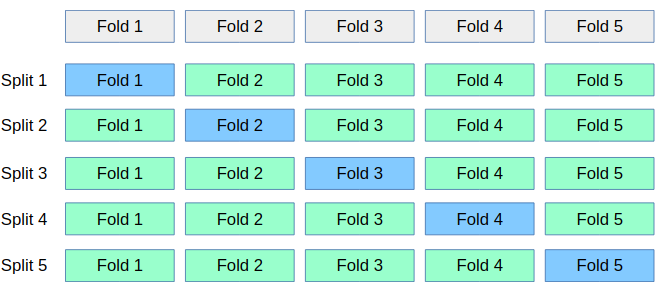

scikit-笔记14:Pipeline Estimators
Table of Contents
%matplotlib inline import numpy as np import matplotlib.pyplot as plt
1 Pipelining estimators
In this section we study how different estimators maybe be chained.
1.1 A simple example: feature extraction and selection before an estimator
1.1.1 Feature extraction: vectorizer
For some types of data, for instance text data, a feature extraction step must be applied to convert it to numerical features. To illustrate we load the SMS spam dataset we used earlier.
import os with open(os.path.join("datasets", "smsspam", "SMSSpamCollection")) as f: lines = [line.strip().split("\t") for line in f.readlines()] text = [x[1] for x in lines] y = [x[0] == "ham" for x in lines]
from sklearn.model_selection import train_test_split text_train, text_test, y_train, y_test = train_test_split(text, y)
Previously, we applied the feature extraction manually, like so:
from sklearn.feature_extraction.text import TfidfVectorizer from sklearn.linear_model import LogisticRegression vectorizer = TfidfVectorizer() vectorizer.fit(text_train) X_train = vectorizer.transform(text_train) X_test = vectorizer.transform(text_test) clf = LogisticRegression() clf.fit(X_train, y_train) clf.score(X_test, y_test)
0.96700143472022959
1.1.2 pipeline ENTER!
The situation where we learn a transformation and then apply it to the test data
is very common in machine learning. Therefore scikit-learn has a shortcut for
this, called pipelines:
from sklearn.pipeline import make_pipeline pipeline = make_pipeline(TfidfVectorizer(), LogisticRegression()) pipeline.fit(text_train, y_train) pipeline.score(text_test, y_test)
0.96700143472022959
>>> what happend when we call fit/score/predict on pipeline
- When calling
fiton the pipeline, it will callfiton each step in turn. After the first step is fit, it will use thetransformmethod of the first step to create a new representation. This will then be fed to thefitof the next step, and so on. Finally, on the last step, onlyfitis called.
- When calling
score, onlytransformwill be called on each step - this could be thetest setafter all! Then, on the last step,scoreis called with the new representation. - The same goes for
predict.
1.2 benefit of using pipeline
1.2.1 1. make code shorter and clearer
As you can see, this makes the code much shorter and easier to handle. Behind the scenes, exactly the same as above is happening.
1.2.2 2. using pipeline on model selection
1.2.2.1 contamination way
Building pipelines not only simplifies the code, it is also important for model
selection. Say we want to grid-search C to tune our Logistic Regression
above.
Let's say we do it like this:
# This illustrates a common mistake. Don't use this code! from sklearn.model_selection import GridSearchCV vectorizer = TfidfVectorizer() vectorizer.fit(text_train) X_train = vectorizer.transform(text_train) X_test = vectorizer.transform(text_test) clf = LogisticRegression() grid = GridSearchCV(clf, param_grid={'C': [.1, 1, 10, 100]}, cv=5) grid.fit(X_train, y_train)
GridSearchCV(cv=5, error_score='raise',
estimator=LogisticRegression(C=1.0, class_weight=None, dual=False, fit_intercept=True,
intercept_scaling=1, max_iter=100, multi_class='ovr', n_jobs=1,
penalty='l2', random_state=None, solver='liblinear', tol=0.0001,
verbose=0, warm_start=False),
fit_params=None, iid=True, n_jobs=1,
param_grid={'C': [0.1, 1, 10, 100]}, pre_dispatch='2*n_jobs',
refit=True, return_train_score=True, scoring=None, verbose=0)
1.2.2.2 why is this wrong
It see some folds in X_train which will be testing fold in future
Here, we did grid-search with cross-validation on X_train. However, when
applying TfidfVectorizer, it saw all of the X_train, not only the training
folds! So it could use knowledge of the frequency of the words in the
test-folds. This is called "contamination" of the test set, and leads to too
optimistic estimates of generalization performance, or badly selected
parameters.
for example:
eg. 1: 'I have a dream', 2: 'I love you', 3: 'I shall do what I can',
we only take 1-gram and 1/3 testing data propotion:
| Training Data[1,2] | fold1 training Data[1] | fold2 training Data[2] | |
|---|---|---|---|
| I | 2 | 1 | 1 |
| have | 1 | 1 | 0 |
| a | 1 | 1 | 0 |
| dream | 1 | 1 | 0 |
| love | 1 | 0 | 1 |
| you | 1 | 0 | 1 |
| shall | 0 | 0 | 0 |
| do | 0 | 0 | 0 |
| what | 0 | 0 | 0 |
| can | 0 | 0 | 0 |
In grid search cv, we don't want all X_train data, we just need a iteration of splitting training on dataset to get differernt folds each time,

1.2.2.3 fix it by using pipeline
The training data of TfidfVectorizer should match with the training data on classifier, If we do TfidfVectorizer on whole training dataset, it will lead word frequency miss-match when it passed to classifier. So we should do:
- for each fold_permutation in training data: …. do TfidfVectorizer on training part of this fold_permutation to get vect_data …. compute 'C' and score of classifier on vect_data return from above compare and return the best 'C'
Note that: we can compose the 2 steps in for-loop by
pipeline.
instead of
- do TfidfVectorizer on whole trainning data to get vect_data
- for each fold_permutation in vect_data: …. compute 'C' and score of classifier on training part of this fold_permutation compare and return the best 'C'
we can use ~pipeline to combine TfidfVectorizer and LogisticRegression:
from sklearn.model_selection import GridSearchCV pipeline = make_pipeline(TfidfVectorizer(), LogisticRegression()) grid = GridSearchCV(pipeline, param_grid={'logisticregression__C': [.1, 1, 10, 100]}, cv=5) grid.fit(text_train, y_train) grid.score(text_test, y_test)
0.98493543758967006
1.2.2.4 the important symbol __
Related to 'logisticregression__C': [.1, 1, 10, 100], note that for we need to
tell the pipeline where at which step we wanted to set the parameter C. We can
do this using the special '__' syntax.
- The name before the '__' is simply the name of the class,
- The part after '__' is the parameter we want to set with grid-search.
1.2.3 3. search over parameters
Another benefit of using pipelines is that we can now also search over
parameters of the feature extraction with GridSearchCV:
from sklearn.model_selection import GridSearchCV pipeline = make_pipeline(TfidfVectorizer(), LogisticRegression()) params = {'logisticregression__C': [.1, 1, 10, 100], "tfidfvectorizer__ngram_range": [(1, 1), (1, 2), (2, 2)]} grid = GridSearchCV(pipeline, param_grid=params, cv=5) grid.fit(text_train, y_train) print(grid.best_params_) grid.score(text_test, y_test)
0.98565279770444758
EXERCISE: Create a pipeline out of a StandardScaler and Ridge regression and apply it to the Boston housing dataset (load using sklearn.datasets.load_boston). Try adding the sklearn.preprocessing.PolynomialFeatures transformer as a second preprocessing step, and grid-search the degree of the polynomials (try 1, 2 and 3).
2 Misc tools
2.1 scikit-learn
2.1.1 ML models by now
- from sklearn.datasets import make_blobs
- from sklearn.datasets import load_iris
- from sklearn.model_selection import train_test_split
- from sklearn.model_selection import cross_val_score
- from sklearn.model_selection import KFold
- from sklearn.model_selection import StratifiedKFold
- from sklearn.model_selection import ShuffleSplit
- from sklearn.model_selection import GridSearchCV *
- from sklearn.linear_model import LogisticRegression
- from sklearn.linear_model import LinearRegression
- from sklearn.neighbors import KNeighborsClassifier
- from sklearn.neighbors import KNeighborsRegressor
- from sklearn.preprocessing import StandardScaler
- from sklearn.decomposition import PCA
- from sklearn.metrics import confusion_matrix, accuracy_score
- from sklearn.metrics import adjusted_rand_score
- from sklearn.cluster import KMeans
- from sklearn.cluster import KMeans
- from sklearn.cluster import MeanShift
- from sklearn.cluster import DBSCAN # <<< this algorithm has related sources in LIHONGYI's lecture-12
- from sklearn.cluster import AffinityPropagation
- from sklearn.cluster import SpectralClustering
- from sklearn.cluster import Ward
- from sklearn.metrics import confusion_matrix
- from sklearn.metrics import accuracy_score
- from sklearn.metrics import adjusted_rand_score
- from sklearn.feature_extraction import DictVectorizer
- from sklearn.feature_extraction.text import CountVectorizer
- from sklearn.feature_extraction.text import TfidfVectorizer
- from sklearn.preprocessing import Imputer
- from sklearn.dummy import DummyClassifier
- from sklearn.pipeline import make_pipeline *